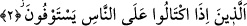

Malik b. Dinar bir gün ölmek üzere olan komşusunu ziyarete gider. Komşusuna
durumunu, ne halde olduğunu sorunca adam: “Ey Malik! Karşımda tırmanmaya
zorlandığım iki ateş dağı var” der. Bunun üzerine Malik hane halkına bu adamın ne işle
meşgul olduğunu sorar. Onlar bunun iki adet ölçeği vardı, alırken birini, satarken
diğerini kullanırdı derler. Bunun üzerine Malik b. Dinar o iki ölçeği getirterek bunları
birbirine çalıp kırar. Sonra adama tekrar ne durumda olduğunu sorar. Hasta; “durum
gözümde gitgide büyüyor” der.
Nakledilir ki; kim ölçü ve tartıda hıyanet içinde olursa yarın onu Cehennemin dibinde
ateşten iki dağ arasına oturturlar. Ona bu ikisini “ölç ve tart” derler. Bir taraftan ateşi
ölçer; diğer taraftan yanar.
Sen ölçü ve tartıda eksik verip fazla almaktasın
Bir gün olur ki, bu eksik ve fazlandan haber verirler.
2. İnsanlardan alırken ölçüp tarttıklarında tam (alırlar).
Bu cümle yukarda geçen Mutaffifin’in sıfatıdır ve onların kınanmayı, bedduâyı hak
ettikleri eksiltmeyi, ne şekilde yaptıklarını açıklamaktadır. Buna göre onlar insanlardan
ölçek kullanarak bir şey satın aldıklarında tam ve eksiksiz ölçmektedirler. Âyette yer
alan “iktiyâl” kökü herhangi bir şeyi ölçerek satın almak demektir. “İttizân” ise herhangi
bir şeyi tartarak almak anlamına gelir.
İşte bunlar ölçek kullanarak bir şey aldıklarında tam olarak almaktadırlar. Âyette “tam
olarak” anlamına kullanılan fiilin kökü “istîfâ”dır. Bu kök, herhangi bir şeyi tam olarak
eksiksiz almak anlamına gelir.
Aslında dilbilgisi kurallarına bakılacak olursa âyette “ale’n-nâs/insanlara” değil de,
“mine’n-nâs/insanlardan” denmeliydi. Ancak “min” harfi cerri ile “alâ”nın yer
değiştirmesi, “iktiyâl” fiiline “isti’lâ” yâni “bunu sonuna kadar yapma” anlamını
yüklemek içindir. Ya da ölçerek satın almanın onlara zarar verdiğine işâret içindir.
Ancak bu zarar, “izâ” kelimesinin ifâde ettiği şart dolayısıyla değildir; tam tersine
cevabın gereği, işin bizzat kendisinden kaynaklanmaktadır. Çünkü âyette yer alan
istîfâ/tam olarak alma kelimesinden maksad, eksiltmeden hakkın tam olarak alınması
değildir. Burada asıl maksad, nasıl kolayına gelirse bir yolunu bularak haklarını
istedikleri biçimde sonuna kadar almaktır. Şu halde ortada iyi niyetle değil, kötü niyetle
bir hak alma söz konusudur. Zaten araplar ölçek kullanarak birşey satın alırken ölçeği
iyice sıkıştırmakta, sallamakta ve adamakıllı doldurmak için hile yapmaktaydılar.
Böylece ölçeklerin ağzından ve terazinin dilinden insanların mallarını çalıyorlardı.